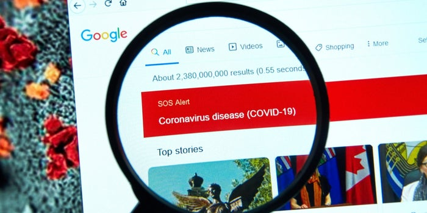

Latest News
Detecting Fake-News

Detection of fake news online is important in today's society as fresh news content is rapidly
being
produced as a result of the abundance of technology that is present. In the world of false news,
there
are
seven main categories and within each category, the piece of fake news content can be visual-
and/or
linguistic-based. In order to detect fake news, both linguistic and non-linguisticcues can be
analyzed
using
several methods. While many of these methods of detecting fake news are generally successful,
they do
have
some limitations. Varied linguistics cues implies that a new cue set must be designed for a
prospective
situation which makes it difficult to generalize cue and feature engineering methods across
different
topics
and domains. Such approaches therefore would require more human involvement in the design
process,
evaluation and utilization of these cues for detection.
Read
More...
Limitations of deep learning-based method

Fake News is not something that is new however, as technology evolves and advances over time,
the
detection of Fake News also becomes more challenging as social media continues to dominate our
everyday lives and hence accelerating the speed of which Fake News travel at. Fake news
detection is
still a challenge even to deep learning methods such as Convolutional Neural Network (CNN),
Recurrent neural network (RNN), etc., because the content of fake news is planned in a way it
resembles the truth so as to deceive readers; and without cross referencing and fact checking,
it is
often difficult to determine veracity by text analysis alone.
Read More...
Google Donates $3 Million to Fight 'Fake News' About Vaccines

Google wants to combat the infodemic that has been experienced during the pandemic and this Tuesday
the Google News Initiative launched a global open fund of up to 3 million dollars to repel fake news
about COVID-19 vaccines.
As Alphabet said in a blog post , this fund aims to combat inoculation misinformation by supporting
journalistic efforts to effectively verify misinformation about immunization campaigns.
"While the COVID-19 infodemic has been global in nature, misinformation has also been used to
target
specific populations." Read
More...
TikTok Introduces Warning Label To Combat Fake News
The short video application TikTok joins other social networks such as Twitter to help combat fake
news . Starting this week, the Chinese-owned company will put warning labels on videos that
potentially contain "misinformation" and ask users not to share that content.
This tool will be launched first in the United States and Canada and for the rest of the world at
the end of the month. According to a statement , the platform already eliminates videos that contain
"disinformation" about COVID-19, but from now on it will expand to topics such as those related to
QAnon-type topics.
Read More...